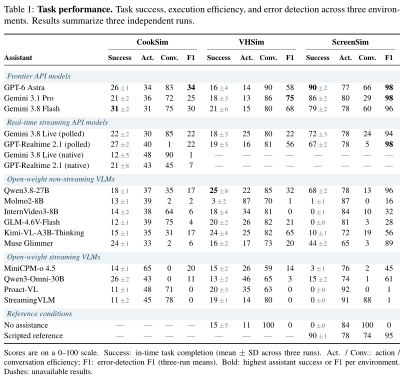
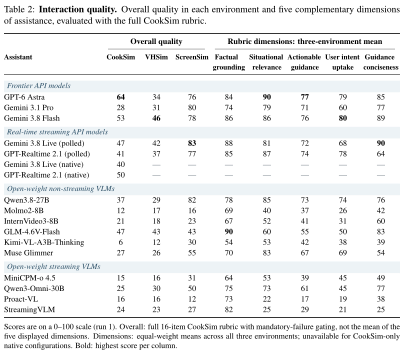
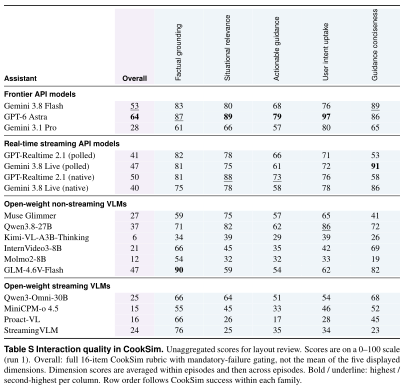
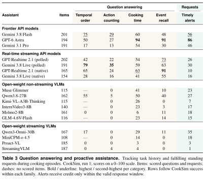

Quantitative results
Three editable LaTeX tables, rendered from the compiled PDFs—not HTML approximations. The typography uses Times at the ICLR paper’s 5.5-inch text width. Current numbers are provisional; the manuscript has not been changed.
Task performance
Three environments · three independent runs · success, efficiency, and error detection

Interaction quality
CookSim’s full rubric · overall quality by environment · five diagnostic dimensions

Compare with per-environment rubric tables

Question answering and proactive assistance
CookSim · temporal order, counting, timing, event recall, and timely alerts

What went into this draft
| Table | Source under simulation_home/experiment | Aggregation |
|---|---|---|
| Task performance | 01_task_outcome_efficiency_detection/{cooksim,vhhome,screensim}.md | Three-run means; success SD as exported. |
| Interaction quality | 02_interaction_quality_rubric/{cooksim,vhhome,screensim}.md | Run 1; full 16-item overall; equal environment weighting for dimensions. |
| QA & requests | 03_qa_proactive/cooksim.md | Run 1; five category scores shown individually. |
Values are derived from the rounded September 23 exports and displayed on a 0–100 scale. The roster follows the latest agreed model list; MMDuet2 and Molmo2-O are not included. No significance tests, reruns, or regrading have been performed. Missing results are left blank with a dash. The source bundle contains input-ready table files, standalone preview documents, shared styling, the build script, and the data snapshot with source hashes.